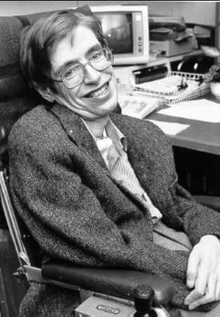

Hawking na NASA, década de 1980
Stephen William Hawking (Oxford, 8 de janeiro de 1942 — Cambridge, 14 de março de 2018)
foi um físico teórico e cosmólogo britânico, reconhecido internacionalmente por sua contribuição à ciência,
sendo um dos mais renomados cientistas do século.
Seus notavéis prêmios são:
- 1979 Medalha Albert Einstein
- 1985 Medalha de Ouro da Royal Astronomical Society
- 1988 Prêmio em Física da Fundação Wolf
- 1989 Título de "Companheiro de Honra", da Rainha Elizabeth II
- 2016 Professor Honorário do Instituto de Astrofísica das Canárias